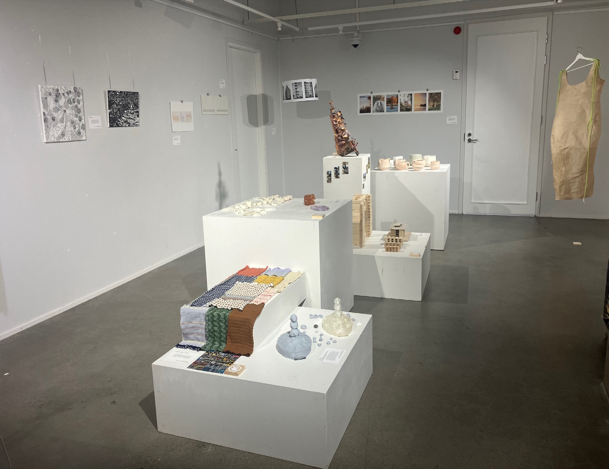
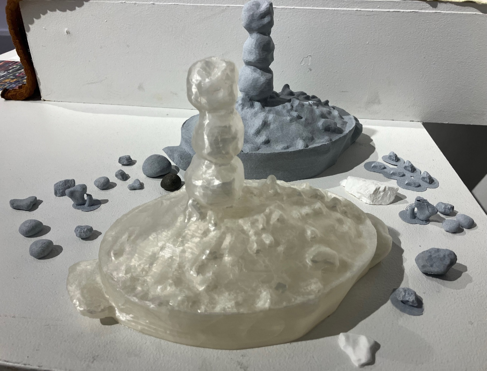
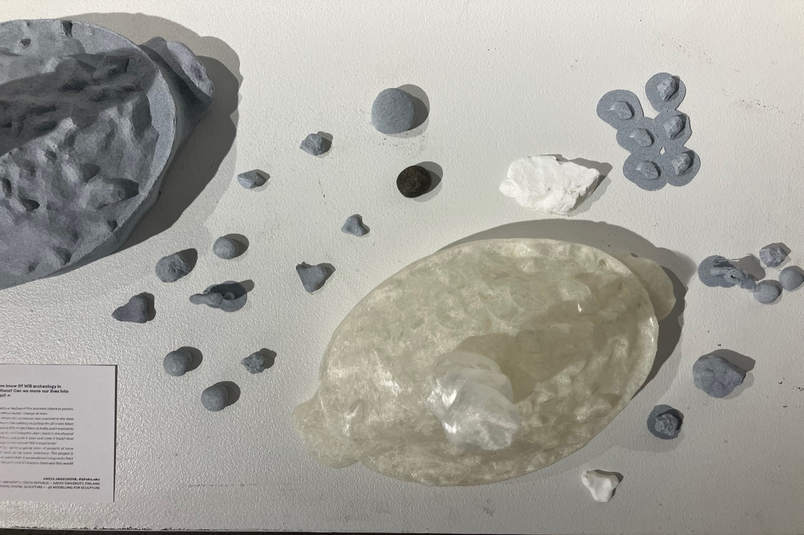

Trofeje II.Trophies II
I wanted to explore what it would be like to change the state of matter once again and bring the object back into the physical world through 3D printing. Can we just save objects, print them later and have them back? How does that change the object? Will a plastic version be enough for us in the future? Will it have to be enough?
The plastic stones around it are also part of the same ongoing series. This project is about the human obsession with collecting. What would it be like if, instead of bringing our grandmothers pebbles from a beach holiday, we sent them 3D scans and they printed them at home?



Photos from the Crossroads exhibition, Aalto University, Finland, November 2024